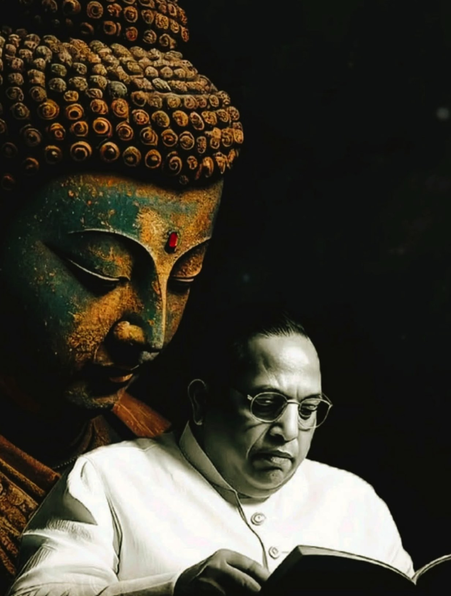
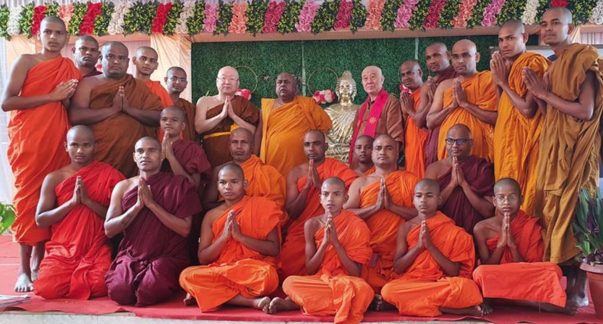
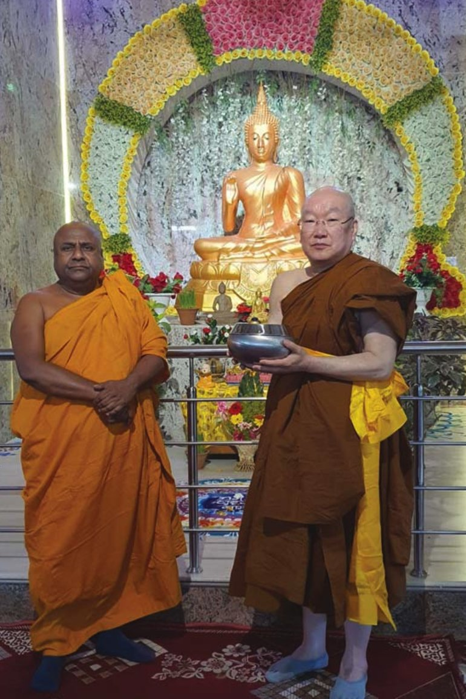
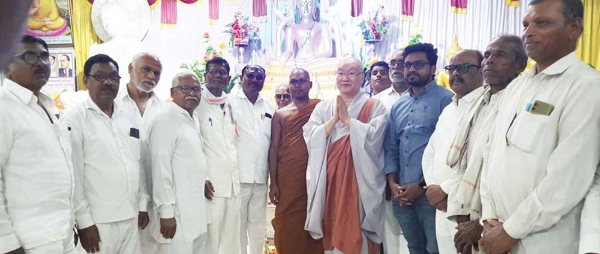
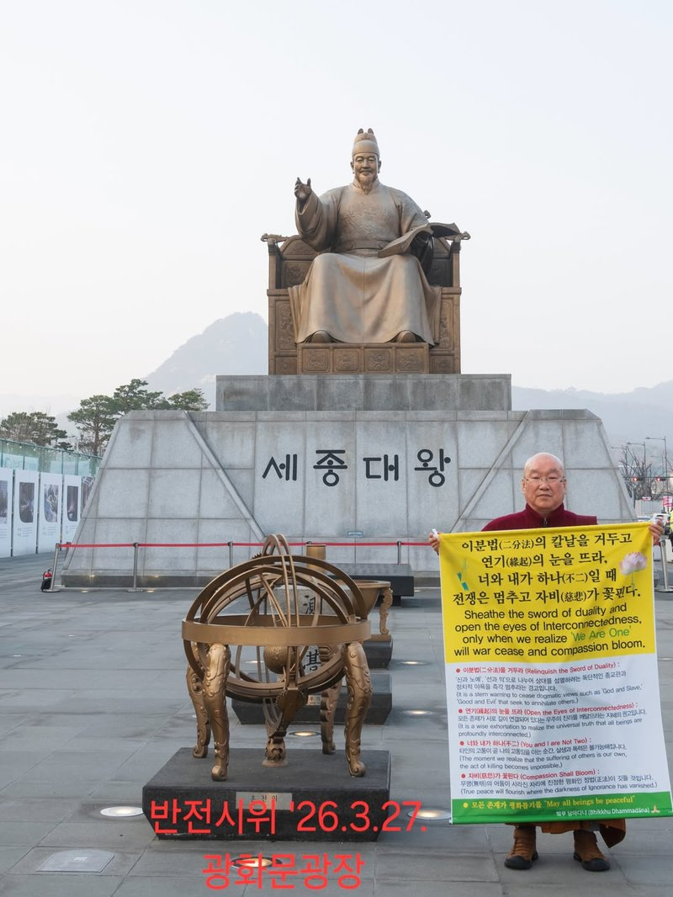
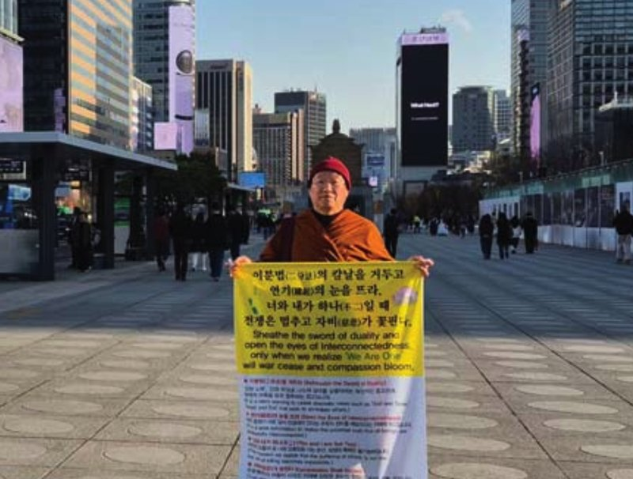
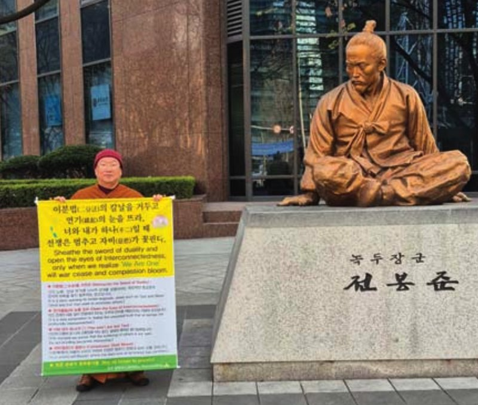
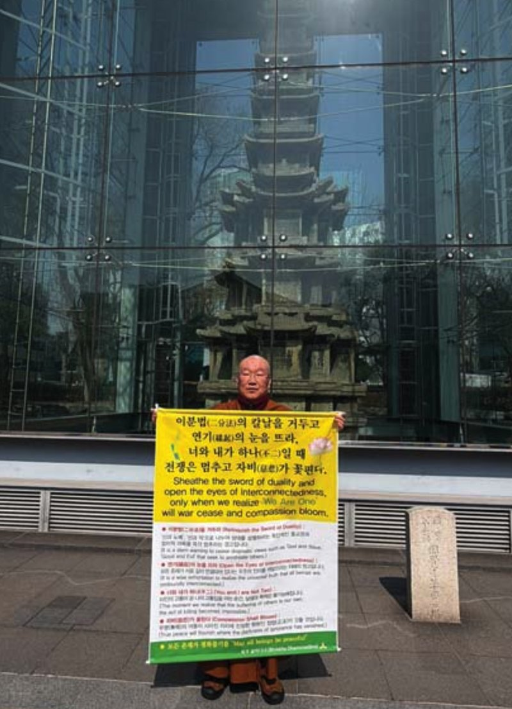
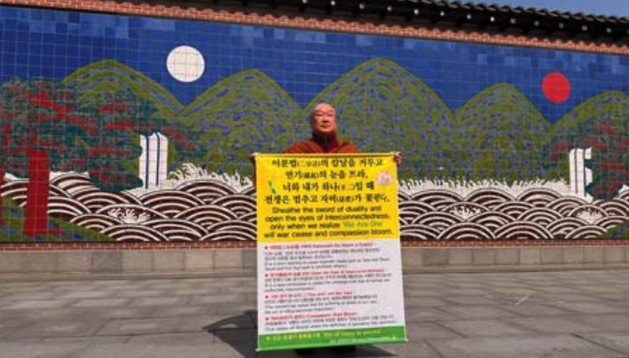
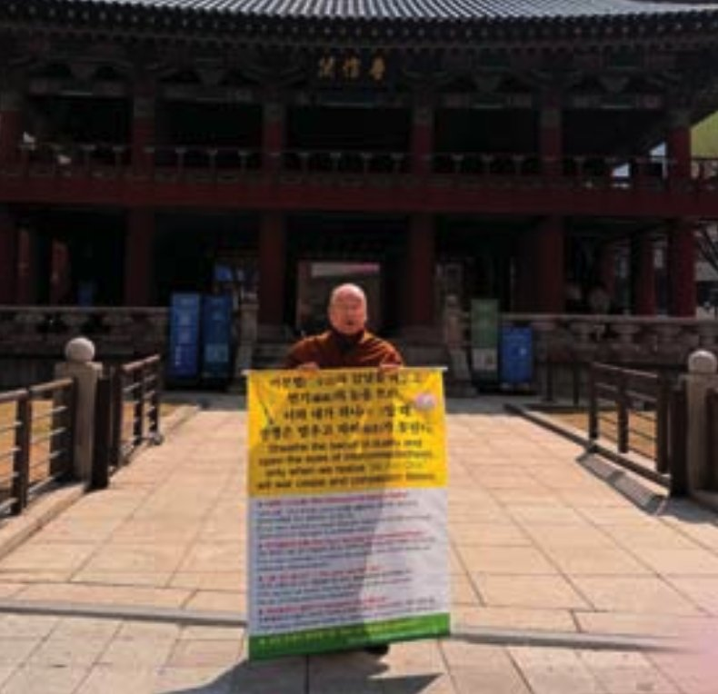

신승불교(나바야나)의 개창자, 암베드카르 박사가 재조명한 불교의 사회적 실천과 평등의 가르침.

1891. 04. 14 – 1956. 12. 06
인도의 헌법 제정자이자 사회 개혁가. 차별 없는 사회와 평등을 위해 평생을 바치고, 부처님의 가르침에 깊은 영향을 받아 불교로 개종하며 자유·평등·인간 존엄성의 가치를 강조했습니다.
📖 대표 저서 — Buddha and His Dhamma (영문) ↗
“신승불교(나바야나) — 불교를 사회·정치적 평등 실현의 도구로 재해석한 현대적 흐름.”
빔라오 람지 암베드카르(1891~1956)는 마디아프라데시 주의 가난한 불가촉천민 가정에서 태어났다. 후원자들의 도움과 본인의 역량으로 엘핀스톤 칼리지를 졸업하고, 미국 컬럼비아대학교와 영국 런던 정치경제대학교(LSE)에서 경제학 석·박사 학위를 취득한 뒤 영국에서 변호사 자격을 얻었다. 당시 인도인으로서는 매우 이례적인 학술적 성취였다.
귀국 후 하층민 지도자로 활동하며 '벙어리의 소리' 발간과 힌두 사원 입장 금지 철폐 운동을 전개했고, 1936년 독립노동당을 창당했다. 독립 후 초대 법무부 장관·제헌의회 의장을 지내며 헌법을 통해 카스트 제도를 부정하고 평등을 명문화했으며, 지정 카스트(SC)·ST·OBC 할당제 같은 법적 장치를 만들었다. 법륜(다르마 차크라)의 국기 도입을 제안하고, 여성의 상속권·재산권 보장과 노동자 복지 대책에도 힘썼다.
힌두교의 카스트 차별에 반대한 그는 생애 말년인 1956년 10월 14일, 나그푸르 딕샤부미에서 수십만 명의 추종자와 함께 불교로 개종하며 22가지 서약을 선서했다. 이는 인도에서 사라져가던 불교를 다시 일으키는 계기가 되었고, '나바야나(신불교)'라는 독자적인 흐름을 형성했다.
암베드카르 박사가 주창하여 1956년 나그푸르 딕샤부미에서 수십만 불가촉천민들과 함께 불교로 개종한 역사적 사건의 선언문.
— 불기 2500년 10월 14일 · 인도 마하라슈트라州 나그푸르市 귀의 땅(딕샤부미)에서
암베드카르의 신승불교(나바야나)는 기존 불교 전통을 그대로 따르기보다, 불교를 사회·정치적 평등과 권리 실현의 도구로 재해석한 현대적 흐름으로 설명할 수 있으며 1956년 수십만 명과 함께 불교로 개종한 집단 개종을 통해 카스트(신분)질서에 대한 거부와 달리트(불가촉천민) 해방을 강조한 바 있습니다.
신승불교는 암베드카르가 기존 불교와 다른 사상을 가진 종파라기보다, 불교 원리를 바탕으로 한 사회운동으로 불교를 내세의 구원보다 현실에서의 바른 삶과 사회정의를 위한 윤리적 실천으로 강조하는 특징을 가지고 있습니다.
“암베드카르는 인도 헌법의 아버지로 불릴 만큼 인도 불교를 부흥시키는데 큰 공헌을 해냈습니다. 그는 신승불교의 개창자로 그동안 합당한 평가나 조명을 받지 못하다 최근에 다시 주목을 받아오고 있는 인물입니다.”
불가촉천민 출신으로 불평등한 신분으로 겪은 온갖 차별 속에서 그 원인을 알게 되었고 적극적 실천으로 평등권 계몽에 앞장서 온 그는 불교의 종가집인 인도에서 800년간 사라진 불교를 다시 부흥토록 불가촉천민 60만 명을(1956년 10월 14일) 불자로 개종시킨 유명한 일화가 전해오고 있습니다.



“우리는 세상에 계급적 차별을 받아서는 안 됩니다. 모두가 동등하고 평등하게 태어났으며 그 권리를 위협받아서는 안 될 것입니다.”
한국 최초로 부처님의 상수제자이신 사리뿟다, 목갈라나 존자님과 암베드카르 박사 존상을 모신 저희 ‘불광동 절’은 신학(神學)이 아닌 인간학(人間學)인 불교에서 말하는 도덕과 윤리의 근본 가르침인 인과법(因果法: 원인 결과법)을 알리는 포교원으로 부처님 재세시의 바른 가르침(正法)을 알고자 하는 불자들과 대중들이 이곳을 찾고 있습니다.






“세계정세는 지금 혼란의 시기에 놓여있습니다. 미국과 이란 전쟁으로 인한 중동의 위기 상황은 곧 세계 정세의 위기를 초래하고 있으며 단 시간에 끝나지 않고 장기화 전망까지 나오고 있는 실정입니다.
작금의 상황 속에서 위정자들은 과연 무엇을 하고 있는지, 그리고 종교인들 역시 그 목소리를 내지 못함에 안타까운 마음을 금할 수 없어 저 혼자서라도 반전 1인시위를 서울 중심가에서 진행해 나가고 있습니다.
알고 보면 세상은 하나입니다. 이분법은 분열과 다툼으로 결국 서로 간에 파괴와 자멸로 이르는 길일 것입니다. 이 모든 것은 제대로 된 최상의 교관(敎觀)이 확립되어 있지 않아서 일어납니다.
우리 인류는 유대교, 기독교, 이슬람교 등 아브라함의 후손들에 의한 끊임없는 교전쟁(敎戰爭)을 치러왔습니다. 하지만 불교는 역사상 교전쟁의 유례가 없었습니다. 다른 교들은 신을 근본으로 하나 불교는 인본에 기인하고 있기 때문입니다.
근본적으로 뿌리에서부터 교의 추구와 가치관을 바르게 보고 믿음을 가져야 하는 것이 중요하며 그 가르침에 대한 작금의 해법은 암베드카르의 신승불교에서 해법을 얻을 수 있을 것입니다.”
법문과 불이(不二) 사상, 그리고 살아가는 지혜에 대한 주지 스님의 말씀.